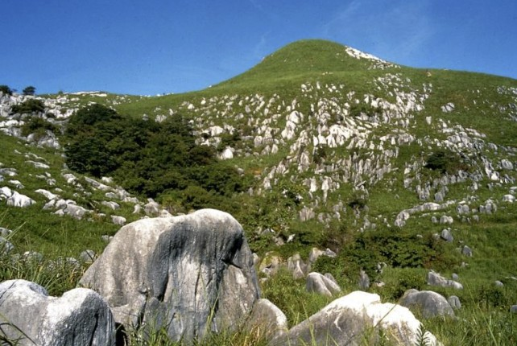

見どころ・体験できること
標高300〜700m、南北6kmに広がる九州最大のカルスト台地です。白い石灰岩が草原の中に点々と並ぶ風景は、他に類を見ない景観として知られています。国指定天然記念物の千仏鍾乳洞では、洞内を流れる清水の中を歩いて進む体験ができます。
毎年3月の野焼きのあとに萌え出る新緑や、秋のすすき野原など、季節ごとの表情の変化も魅力です。カルスト特有の草原生態系には、この地域ならではの動植物が生息しています。
おすすめシーズン：3月は野焼き、4〜5月は野焼き後の新緑、10〜11月はすすき野原が見頃です。
基本情報・アクセス
| 所在地 | 〒803-0180 福岡県北九州市小倉南区平尾台1-4-40（自然観察センター） |
|---|---|
| 入場料 | 自然観察センターは無料（千仏鍾乳洞は別途入場料） |
| 開園時間 | 自然観察センター 9:00〜17:00（月曜休館） |
| 車でのアクセス | 北九州都市高速 横代出口より約25分 |
| 公共交通 | JR石原駅からタクシーで約15分（路線バスは本数が限られる） |
| 駐車場 | 市営駐車場（有料、1,100台規模） |
| 公式サイト | 平尾台自然観察センター（新しいタブで開きます） |